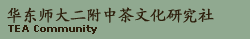

 欢迎来到嘉木之盟专属网站
欢迎来到嘉木之盟专属网站
本网站为华东师大二附中茶文化
研究社的网站。在这里，你将看
到关于本研究社的详细资料、社
员介绍、活动介绍以及许多关于
中国茶艺的资讯，更有英文版本
供浏览以及提高英语水平。希望
您能够喜欢我们的网站，再次感
谢您的光临。
栏目导航
茶文化研究社主要活动内容介绍
2002茶文化研究社社团研究计划
2002茶文化研究社社团成员列表
如果你想得到更多有关华东师大
二附中茶文化研究社的资讯，请
联系社长Terry:
liujing1985_1123@hotmail.com
首页 | 茶文化研究社 | 中国茶道札记 | 留言板 | English Version

2 0 0 2 茶 文 化 研 究
社 社 团 研 究 计 划
经过一个学期的社团活动我社团工作已基本进入了轨道，在本学期将更好地开展社团活动，本学期的社团活动我们已进行了具体的计划和安排。
首先，对于学校社团课程化的要求，我们将把原先的茶道社改组为茶文化研究社，正式定性为研究性社团，实行研究性学习及活动，将社团活动纳入正轨，对于社团的要求就是在学期末尽可能完成一篇论文，实现研究的目的。既然是课程化那么对于社员，我们也将严格要求，提高出勤率。
其次对于本学期的活动，我们将作如下安排。由于以茶会友，共同品茶交流--这是我们办社的最初目的，所以我们将继续对于茶道进行一番学习，这样安排也是由于我们社团不是延续性社团人员更动较大的原因，学习茶道是对于茶文化研究的一个方法，通过对茶道的研究了解茶文化。除此之外，由于经费、时间等很多客观原因，对于茶文化的研究考察不能通过亲身实践来了解学习，因此通过影视这个媒体是很好的途径，我们将安排观看有关茶文化的录象，这也能提高社员的学习兴趣，研究不再是单纯的学习枯燥的理论知识。如果有条件的话，我们希望能够安排社员通过上网、到图书馆等方法去了解茶文化、接近茶文化，研究不再是被动的学习，成为主动的研究交流。
以上活动都是关于研究方面的活动，可能较为乏味不能提起社员的活动兴趣，虽然社团需要课程化，但是课程也需要趣味性来吸引学生，更好地达到教学目的，社团也是如此。所以我们将安排一定的户外活动来提高社员活动的积极程度。如果可能的话，我们希望本学期进行几次这样的活动，上学期由于季节原因，一些没有成行的活动如对茶叶市场的考察，可以在这学期活动，春天是上海茶文化节举办的季节，有很多茶文化相关的活动将陆续开展，届时我们可以开展一些有关的社团活动，比如，到茶文化节举办地闸北公园参观，那里经常有茶艺交流，切磋茶艺可以提高社员的技巧，使这方面更为精进，这也是我们交流茶文化的绝好机会。这次的茶文化节有当场炒茶叶并品尝各类茶叶的机会，这对于所有茶文化爱好者而言是再好不过的良机，我们也期盼能使这次活动成行。还有各类茶文化活动对于我们社团都是很有意义的，参加茶文化节的有关活动对于我们的研究将有很大的帮助。茶叶市场的考察主要是让社员了解各类茶叶及其特点和特色，懂得区分茶叶，在上学期，我们让社员了解了中国十大名茶，但只是限于书本而已，让社员亲身体验才是最重要的，所以此活动也是有着很重要的意义。
当然，我们的研究不仅仅在茶的方面，茶文化与许多方面存在着联系，比如酒文化，文学等，通过茶文化的研究了解更多的文化这才是我们的目的，所以我们还将对其他方方面面进行学习研究。
本学期的活动计划还是较为丰富的，活动将会带给社员不小的收获，社团课程化会使社团工作更为严谨，也不乏趣味化，所以相信这学期的社团活动将更好的开展起来。
-
嘉木之盟:::华东师大二附中茶文化研究社
(网站设计/制作)版权所有(C)2001-2002 Cloud Ryan
-
网站版本: 2.0
特别鸣谢Harry S.对本网站制作提供的帮助
所有资讯内容均来自网上，转载时请注明源出处。